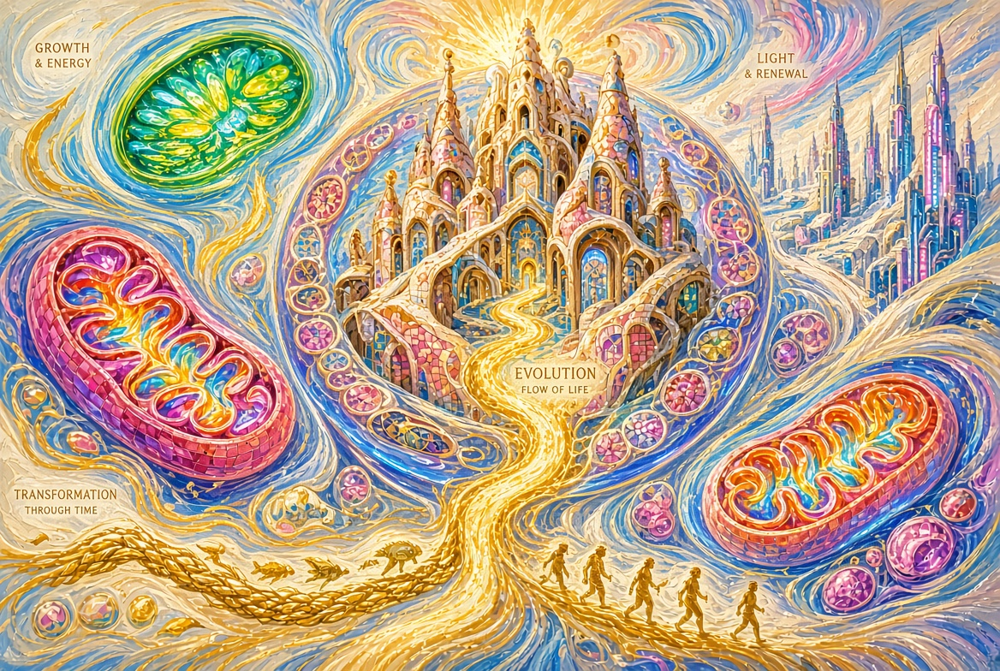

Книга IVКнига четвёртая цикла «Теорема Творца»
Пролог. Когда секунда длится вечность
На наноуровне время течёт иначе.
То, что для человека — мгновение,
для молекулярных машин — длинная, насыщенная событиями история.
Репликация, трансляция, укладка белка, коррекция ошибок —
всё это происходит в режиме,
где секунда становится почти эпохой.
Эта книга о том, как информация становится работающей машиной,
и о том, что скорость этих процессов заставляет по-новому почувствовать Время.
Глава 1. Текст, который строит машину
ДНК хранит текст.
РНК считывает его.
Рибосома переводит в аминокислотную цепь.
Цепь складывается в трёхмерную машину.
Это не метафора.
Это направленный информационный поток
с чёткой архитектурой на каждом этапе.
Центральная догма — не просто схема.
Это описание того, как смысл (последовательность)
становится функцией (белком).
Инженерия здесь проявляется уже на уровне языка:
есть носитель, есть считывание, есть перевод, есть сборка.
Глава 2. Нанофабрика
Рибосома.
Десятки белков и молекул РНК.
Точная геометрия.
Пошаговый синтез.
Возможность работать параллельно — тысячи копий в одной клетке.
Она не просто «делает белки».
Она печатает детали будущих машин
с высокой точностью и скоростью.
Каждая новая полипептидная цепь —
это заготовка, которая почти сразу отправляется
в пространство возможных форм.
Глава 3. Копирование с почти нулевой ошибкой
Репликация ДНК.
Скорость — сотни нуклеотидов в секунду на одну вилку (у бактерий).
В клетке человека за время одного деления
копируются миллиарды пар оснований.
При этом итоговая ошибка после систем коррекции —
одна на миллиарды.
Это не грубое копирование.
Это многоуровневая система:
полимераза, proofreading, mismatch repair, дополнительные механизмы.
Сложность растёт не линейно.
Она иерархична.
Скопировать информацию мало.
Нужно скопировать её так,
чтобы следующий уровень организации не разрушился.
Глава 4. Скорость, которую трудно почувствовать
Переведём молекулярные процессы в человеческие единицы.
Репликационная вилка движется с скоростью,
которая в масштабе клетки выглядит стремительной.
Рибосома добавляет аминокислоты десятками в секунду.
Белки складываются за время,
которое для нас почти незаметно.
Если бы мы могли замедлить время
до масштаба этих машин,
мы увидели бы не «мгновенные» события,
а длинные, согласованные, почти технологические процессы.
Скорость здесь — не хаос.
Скорость здесь — признак отлаженности.
Глава 5. Парадокс Левинталя и укладка белков
Белок из ста аминокислот теоретически может принять
астрономическое число конформаций.
Если бы он перебирал их случайно,
возраст Вселенной не хватил бы.
Но белки складываются за миллисекунды или секунды.
Это парадокс Левинталя.
Он показывает:
случайный перебор на наноуровне не работает.
Процесс укладки направлен.
Существует энергетический ландшафт с воронкой.
Правильная форма — глубокий минимум.
Промежуточные состояния уже сильно ограничивают поиск.
Многие белки начинают складываться ещё во время синтеза на рибосоме.
Шапероны помогают сложным случаям не застрять.
Материя здесь не ищет втемную.
Она движется по заранее предпочтительным путям.
Пространство поиска сужено.
Это выглядит как свойство системы,
в которую возможность быстрой и точной сборки
была заложена заранее.
Глава 6. Регуляция и время включения
Мало произвести деталь.
Нужно произвести её вовремя,
в нужном количестве
и в нужном месте.
Геном содержит не только последовательности белков,
но и огромный регуляторный аппарат:
когда включать, когда выключать,
как отвечать на сигналы,
как согласовывать работу тысяч генов.
Эволюция на этом уровне —
уже не только изменение текста,
но и тонкая настройка времени его прочтения.
Глава 7. Фронт-лоадинг
Геном несёт не только текущую инструкцию.
Он несёт потенциал.
Многие возможности будущих состояний
уже присутствуют в виде регуляторных сетей,
дублированных генов,
скрытых программ развития.
Эволюция в этом свете —
не создание сложности из ничего,
а раскрытие, комбинаторика и модификация
уже существующей архитектуры.
Отбор работает.
Но работает он с материалом,
который уже обладает высокой организованностью.
Глава 8. Разные часы одной реальности
Молекула живёт в одном такте.
Человек — в другом.
Возможный вечный разум — в третьем.
Одни и те же события
для разных субъектов имеют разную длительность и плотность.
То, что для человека — мгновение укладки белка,
для молекулярной системы — целая история поиска минимума.
То, что для человека — жизнь,
для вечного наблюдателя может выглядеть
как короткий, яркий, насыщенный эпизод.
Эволюция показывает:
время не едино.
Оно зависит от уровня организации
и от того, кто (или что) воспринимает.
Именно здесь эта книга напрямую касается следующей — «Время».
Эпилог
Информация становится машиной.
Машина поддерживает информацию.
Цикл замкнут и при этом открыт.
На наноуровне энтропия не побеждена навсегда —
она подчинена достаточно долго,
чтобы сложность успела развернуться,
а зритель — появиться.
И когда зритель сам начнёт выходить
за пределы биологического такта,
эволюция не закончится.
Она просто сменит носителя.